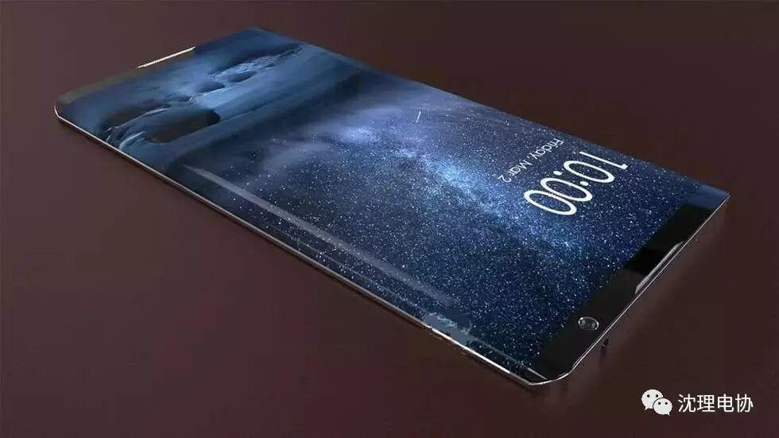
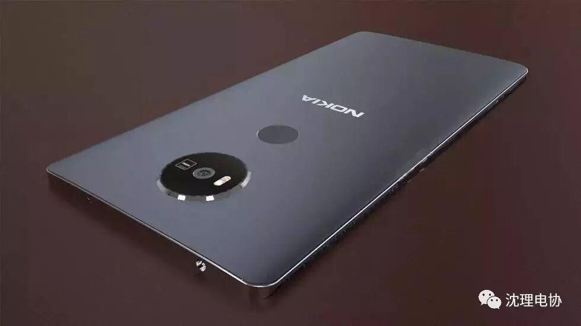
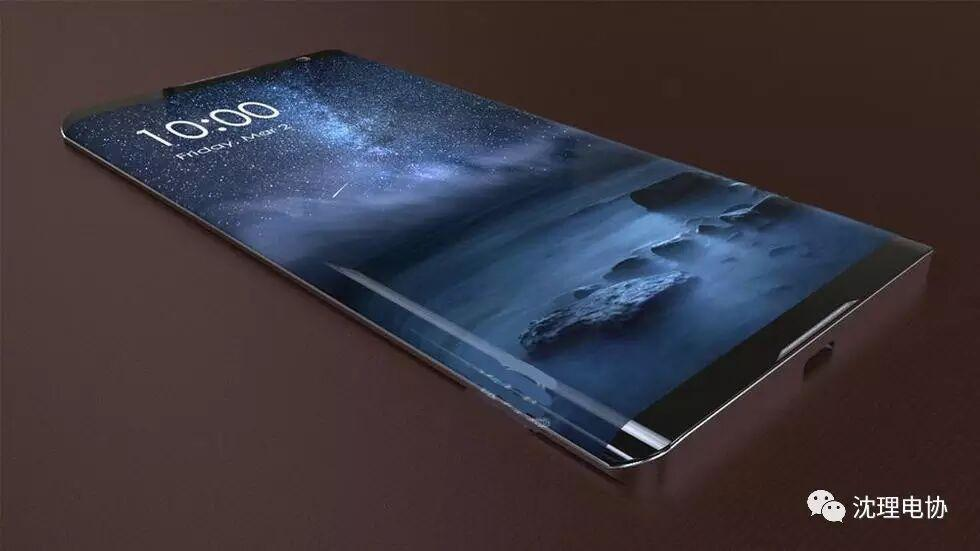

诺基亚酷炫来袭？
诺基亚酷炫来袭！
中关村在线消息：最近外媒曝光了一组诺基亚Edge产品的概念图，并预计此款机型或将是苹果新一代产品和三星GALAXY S8的最佳竞争对手。该机预计运行安卓7.0系统，采用经典金属机身，并搭配时下最新、最流行的双曲面玻璃面板。
图 诺基亚Edge概念图 图片来自网络
具体来看，处理器方面，诺基亚Edge或将搭载骁龙八核处理器，6GB运行内存。屏幕方面，采用5.7英寸四核4K分辨率AMOLED屏幕，并使用坚固耐刮擦的康宁第五代大猩猩保护玻璃，大幅提升抗摔性能，也更加符合诺基亚“结实抗摔”的气质。

图 诺基亚Edge概念图 图片来自网络
摄像头方面，诺基亚Edge或将配备2400万像素的卡尔察司镜头，配备5X光学变焦镜头，4K视频录制和OIS，内置虹膜识别的自拍镜头。此外，诺基亚Edge还将配备裸眼3D镜头，而这也将成为该机最大的惊喜。
从外观来看，诺基亚Edge的机身外形圆润有光泽，屏占比很高。
总体来看，双曲面屏、屏占比高、6GB内存、八核处理器、2400万像素、4K分辨率，这些元素也均在苹果新一代产品或三星GALAXY S8身上出现过，如果能够在诺基亚Edge身上实现的话，那么诺基亚就有了雄起的资本，就真的能够阻击一下苹果和三星了。

看着这酷炫的手机是不是心动呢？其实你并不需要羡慕，在电协你可以学到很多东西，软件硬件都会涉及，不久的将来，你同样有实力！
编辑-王宁